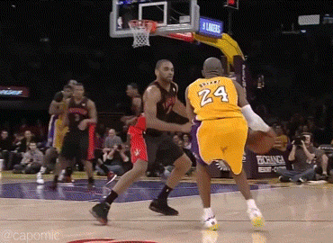

Next in our warm-up sessions, we would spend 2-3 minutes jumping rope while doing various routines. This is a great way to warm-up the legs while preparing the ankle and knee joints for practice. After our jump rope sessions would come 5-8 minutes of team stretching. Make sure you are really concentrating on the major muscle group such as: Lower Back Hamstrings Quads Shoulders One area we stretch that is often overlooked is the upper back or the "lat" muscles, which are key for reaching rebounds and shooting. While in a seated position, spread both legs as wide as possible with your knees slightly bent. Have teammates hold hands and pull each other forward and upward. Hold the stretch 5-8 seconds for 3 sets. Warm-Up Drills After stretching as a team, we put our players on the baseline and continued with a running warm-up for three minutes. These drills consisted of: Ankle Flips: Running on the toes without bending the knees Butt Kicks: Jogging while leaning forward bringing the heels up behind High Knee Pumps: Running with good, powerful extensions of the knees Power Skips Carioca: Running laterally with crossover step Defensive Slides Not until we finished this routine did we start practice. Coaches - be smart! Now For The Weightlifting Routine: Generic Basketball Tired of wheezing your way through those 1-on-1 matches in the driveway? Wish you could slam dunk instead of having your opponent flush one in your grill? Everything you need is here!
By Zakaria Khalif